例题 1
例 1 用 “五点法”作出函数 的大致图像,并写出使得 的 的取值范围.
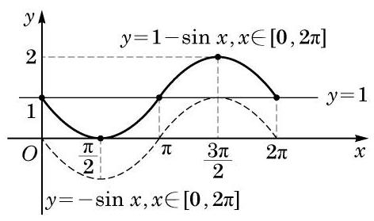
图 7-1-5
学生阅读版 / 沪教版高中数学
必修第二册
第7章三角函数 · 保留教材主线与原题
教材与正式教参整合
前一章学习了三角，无论是在锐角三角形中, 还是在平面直角坐标系中, 我们都是从几何的角度, 把正弦、余弦和正切看成一个比值. 本章我们将从函数的角度看待正弦、余弦和正切, 研究这些三角函数的图像与性质.
与幂函数、指数函数及对数函数不同, 三角函数具有周期性. 在现实生活中存在大量的周期现象，如四季的交替，钟表指针的转动， 弹簧的振动，等等. 三角函数是刻画周期现象最典型的数学模型. 根据 19 世纪法国数学家傅里叶(J. B. J. Fourier)建立的傅里叶级数理论， 一般的周期函数都可以用正弦函数和余弦函数构成的无穷级数表示, 它确认了正弦函数和余弦函数在周期现象研究中重要而本质的作用, 使三角函数成为分析和解决周期问题的基本工具, 在物理学、工程技术和其他许多领域都有广泛的应用.
对任意给定的实数 ,都有 . 这说明当 的值增加或减少 的整数倍时, 的值会重复出现. 因此,只要作出正弦函数 在区间 上的图像, 就可以得到正弦函数在 上的图像.
下面，我们结合单位圆，利用描点法作 的大致图像.
为了描出 图像上的某个点 ,先在平面直角坐标系的 轴上任取一点 ,以点 为圆心的单位圆与 轴有两个交点,其中右边的一个交点记作 (图 7-1-1). 设 是此单位圆上一点, ,作 垂直于 轴,其垂足为 Q. 对比以坐标原点 为圆心的单位圆中角 的终边与单位圆的交点,可知点 的纵坐标为 ,而 的长是 . 在 轴上取点 ,将线段 平移至 的位置使点 与点 重合,从而点 的坐标为 ,这样就得到了函数 图像上的一点 .
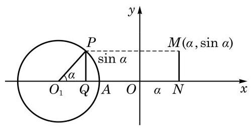
图 7-1-1
随着 的变化,可以得到函数 图像上的其他点.
方便起见,我们先将单位圆 分为 12 等份 (等份数越多, 作出的图像越精确),使得角 的弧度数依次取 、 ,再借助圆 得到对应的纵坐标,依次作出函数 图像上的点 、 ,用光滑的曲线将这些点连接起来,就得到正弦函数 的大致图像 (图 7-1-2).
在本节的阅读材料中将说明简谐运动中物体离开平衡位置的位移关于时间的变化规律可以借助于正弦函数来描述.
单位圆是作正弦函数图像的有力工具. 就是角 的终边与以原点为圆心的单位圆交点的纵坐标.
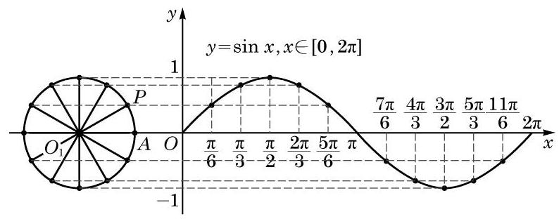
图 7-1-2
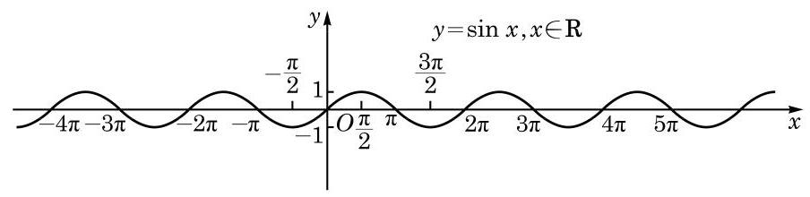
图 7-1-3
从图 7-1-2 可知， 和 是函数 图像的五个关键点. 我们描出这五个点,并用光滑的曲线将它们连接起来,就得到函数 的大致图像 (图 7-1-4).
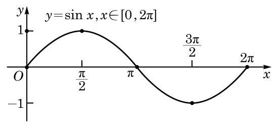
图 7-1-4
例 1 用 “五点法”作出函数 的大致图像,并写出使得 的 的取值范围.

图 7-1-5
根据正弦函数的定义及图像, 可以得到它具有如下主要的性质.
由正弦曲线 (图 7-1-3) 可知, 正弦函数的值随着自变量的变化呈现出周期性的变化. 这种“周而复始”的变化规律可以用数学式子表示为
定义 对于函数 ,如果存在一个非零常数 ,使得当 取其定义域 中的任意值时,有 ,且成立
因为对任意给定的实数 ,都有 , ,由周期函数的定义,正弦函数 是周期函数,而 均是它的周期. 可以证明, 是它的最小正周期. 事实上,若定义域为 的函数 具有正周期 ,由于对此函数定义域中任意给定的实数 ,总成立 , 因此函数 与函数 必具有完全相同的图像. 换而言之,将函数 的图像向左平移 个长度单位,所得图像与 原来的图像必完全重合. 对于正弦函数 ,对任何给定的 ,因为 ,即 ,所以 的图像与 的图像绝不会相同. 这说明正弦函数绝不会有小于 的正周期,从而其最小正周期为 .
例 2 求下列函数 的最小正周期:
(1) ；
(2) .
例 3 已知函数 (其中常数 ) 的最小正周期是 2,求 的值.
例 4 对于函数 ,当 时， 能否成立? 如果成立,那么 是不是 的周期? 为什么?
(1) ； (2) .
由于正弦函数是周期函数, 因此研究它的最值和单调性等性质时, 都可以在长度为一个周期的区间上进行.
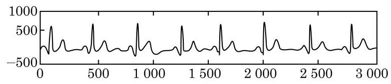
(第 3 题)
设角 的终边与以原点为圆心的单位圆交于点 (图7-1-6), 点 的坐标为 . 由正弦的定义, ,于是有 .
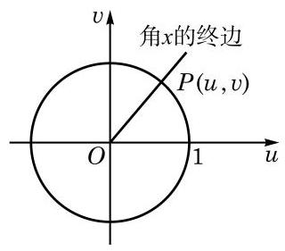
图 7-1-6
因此，正弦函数 的值域为 ，其最大值为 1,最小值为 -1 .
考虑到正弦函数 的最小正周期为 ,因此只需选择一个长度为 的合适的区间来研究其最大值与最小值. 取此区间为 . 在 上,当且仅当 时, 取得最大值 1 ; 当且仅当 时, 取得最小值 -1 .
由于正弦函数 的最小正周期是 ,因此当且仅当 时, 取得最大值 1 ; 当且仅当 时, 取得最小值 -1 .
例 5 求下列函数的最大值和最小值, 并求出取得最大值和最小值时所有 的值:
(1) ；
(2) ；
(3) ；
(4) .
例 6 如图 7-1-7,在一个半径为 的半圆形铁板中,截取一块矩形 ,使得矩形的顶点 在半圆的直径上, 在半圆弧上. 问: 如何截取矩形 ,使其面积达到最大值? 并求出这个最大值.
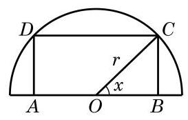
图 7-1-7
(1) ；___ (2) .
(1) ；
(2) ；___
(3) .
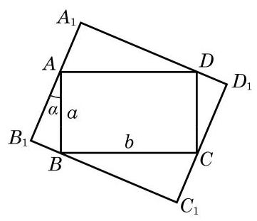
(第 3 题)
对任意给定的 ,等式 都成立,因此正弦函数 是一个奇函数,从而其图像关于坐标原点中心对称.
例 7 判断下列函数 的奇偶性,并说明理由:
(1) ；
(2) ；___
(3) .
由于正弦函数是以 为最小正周期的周期函数,因此在研究它的单调区间时,只需选择一个长度为 的合适的区间进行考察. 方便起见,我们可以在 上研究正弦函数 的单调性.
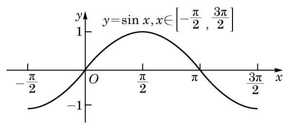
图 7-1-8
观察函数 的图像 (图 7-1-8),可以看到: 当 由 增大到 时,曲线上升, 的值随着 的增大而增大,由 -1 增大到 1 ; 而当 由 增大到 时,曲线下降, 的值随着 的增大而减小,由 1 减小到 -1 .
这就是说,正弦函数 在 上是严格增函数; 在 上是严格减函数.
由于正弦函数 的最小正周期是 ,因此正弦函数 在 上是严格增函数; 在 上是严格减函数.
在图 7-1-6 中, 因为在单位圆上, 当 由 增大到 时,点 的纵坐标 由 -1 增大到 1 , 且 ,所以 的值由 -1 增大到 1 .
例 8 利用函数的单调性, 比较下列各组数的大小:
(1) 与 ；
(2) 与 .
例 9 (1)求函数 的单调减区间；
(2)求函数 的单调增区间.
(1) ; (2) ；
(3) ； (4) .
(1) 和 ； (2) 和 .
(1) ； (2) ；
(3) .
一个质量为 的质点绕点 按逆时针方向做匀速圆周运动. 设圆的半径为 ,而质点运动的角速度为 . 以圆心 为坐标原点,圆心 与质点的初始位置 的连线为 轴,建立如图 7-1-9 所示的平面直角坐标系. 经过一段时间 ,该质点沿圆周从点 运动到点 . 由于 为角 的终边,由正弦和余弦的定义,有 这说明匀速圆周运动在水平方向和竖直方向的投影分别按余弦规律和正弦规律随时间 而变化.
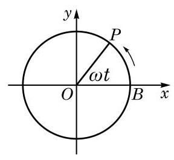
图 7-1-9
从物理学知识知道,质点做匀速圆周运动所需要的向心力的大小是 ,方向指向
圆心. 向心力的竖直分力为 . 记常数 ,就有 ,从而质点所受合力的竖直分力与竖直位移成正比且方向相反, 这正和简谐运动中质点 (如图 7-1-10 中连接在弹簧上的小球) 的受力情况相仿. 由此类比, 我们知道匀速圆周运动在竖直方向上的投影就是一个简谐运动,它的位移随时间的变化关系为 . 更一般地,如果不要求 时 ,就有 .
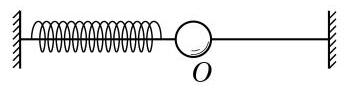
图 7-1-10
(1) ； (2) .
(1) ； (2)
(1) ; (2) ；
(3) ；___ (4) .
(1) ； (2) ；___ (3) .
(1) 与 ； (2) 与 .
(1) ； (2) .
(1) ； (2) .
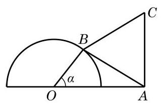
(第 6 题)
(1)写出函数 的最小正周期；
(2)作出函数 的图像.
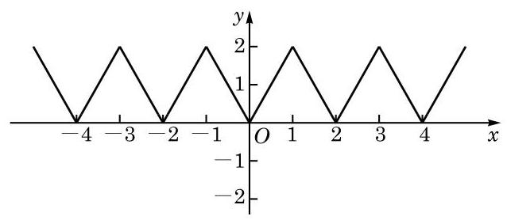
(第 7 题)